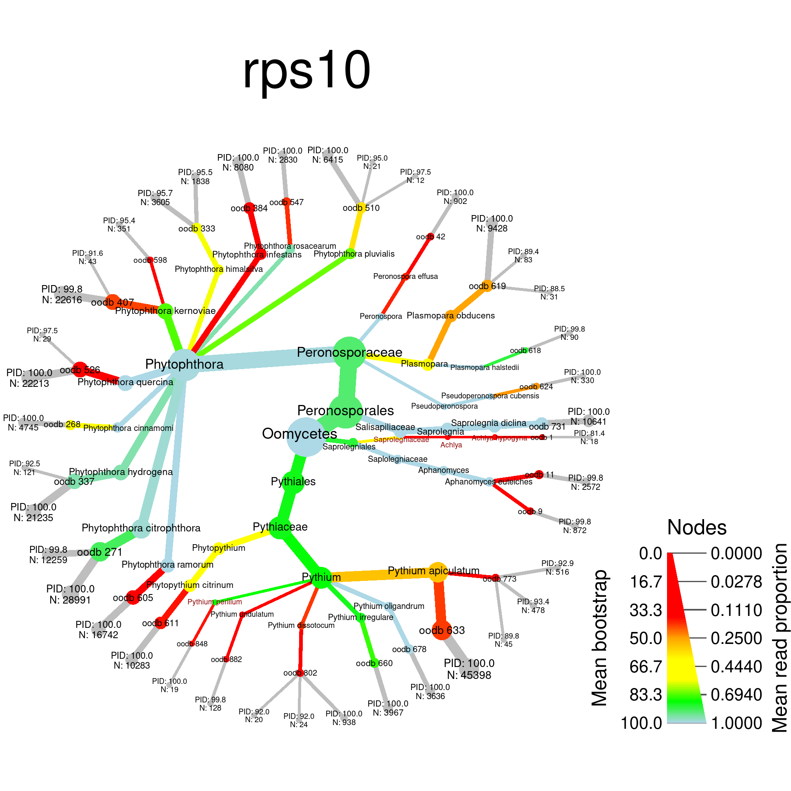
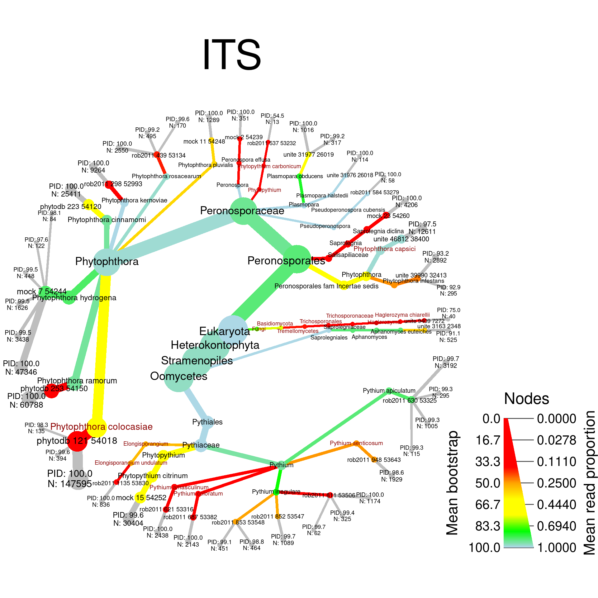
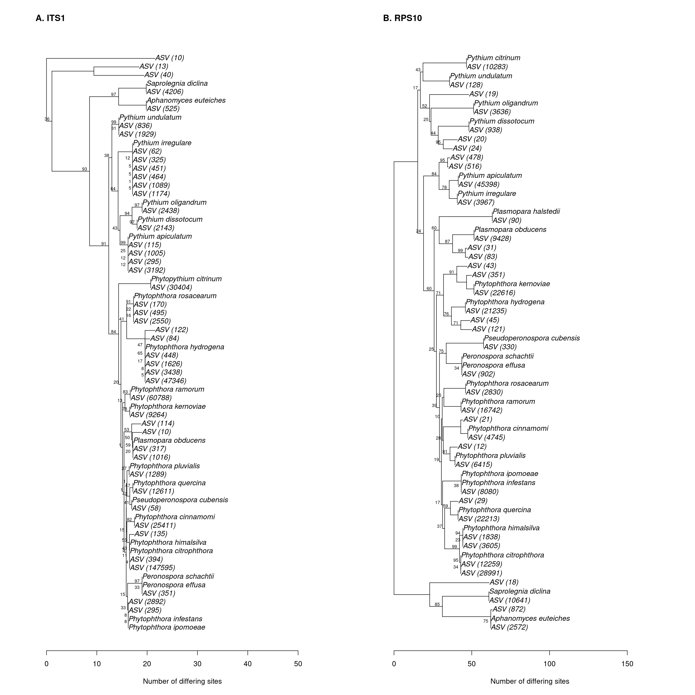
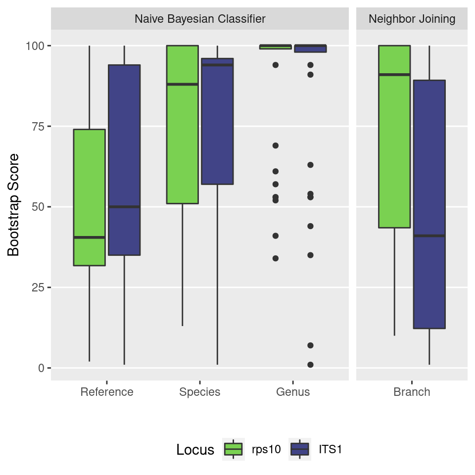

library(dplyr)
library(purrr)
library(furrr)
library(tidyr)
library(readr)
library(ggplot2)
library(sessioninfo)
library(metacoder)
library(vegan)
library(viridis)
library(taxize)
library(purrr)
library(ape)
library(ips)
library(insect)
library(phangorn)
library(DT)
library(gridExtra)
library(stringr)
library(Biostrings)The primary goal of any barcode is to accurately reconstruct community of organisms it is used on. We sequenced known mock communities to evaluate how well rps10 and ITS1 can infer these communities.
minimum_read_count <- 10
seed <- 1
set.seed(seed)The minimum read count is higher than would be usual for a metabarcoding analysis. We chose a relatively high read count because this analysis will only use the mock community and since the mock community is less diverse than most natural communities that metabarcoding is used on, we expected erroneous sequences to be more common than usual.
Commands that have “future” in them are run on multiple cores using the furrr and future packages.
plan(multiprocess)## Warning: [ONE-TIME WARNING] Forked processing ('multicore') is disabled
## in future (>= 1.13.0) when running R from RStudio, because it is
## considered unstable. Because of this, plan("multicore") will fall
## back to plan("sequential"), and plan("multiprocess") will fall back to
## plan("multisession") - not plan("multicore") as in the past. For more details,
## how to control forked processing or not, and how to silence this warning in
## future R sessions, see ?future::supportsMulticoreRead the sample metadata table:
metadata <- read_csv(file.path('intermediate_data', 'metadata.csv'))##
## ── Column specification ────────────────────────────────────────────────────────
## cols(
## sample_id = col_character(),
## primer_pair_id = col_character(),
## dna_type = col_character(),
## dna_sample_id = col_character(),
## locus = col_character(),
## forward = col_character(),
## reverse = col_character(),
## sample_type = col_character()
## )datatable(metadata)Read the ASV abundance matrix:
read_abund_mat <- function(path) {
# Read CSV
abundance <- read_csv(path)
# Clean up species names
abundance$taxonomy <- abundance$taxonomy %>%
sub(pattern = ' aff. ', replacement = '', fixed = TRUE)
asv_data <- parse_tax_data(abundance, class_cols = 'taxonomy', class_sep = ';',
class_regex = '^(.+)--(.+)--(.+)$',
class_key = c(taxon = 'taxon_name', boot = 'info', rank = 'taxon_rank'))
names(asv_data$data) <- c('abund', 'score')
transmute_obs(asv_data, 'score', sequence = sequence[input_index], boot = boot, rank = rank)
}
asv_data <- read_abund_mat(file.path('intermediate_data', 'abundance_asv.csv'))##
## ── Column specification ────────────────────────────────────────────────────────
## cols(
## .default = col_double(),
## sequence = col_character(),
## blast_tax = col_character(),
## taxonomy = col_character()
## )
## ℹ Use `spec()` for the full column specifications.## Warning: `as.tbl()` is deprecated as of dplyr 1.0.0.
## Please use `tibble::as_tibble()` instead.
## This warning is displayed once every 8 hours.
## Call `lifecycle::last_warnings()` to see where this warning was generated.otu_data <- read_abund_mat(file.path('intermediate_data', 'abundance_otu.csv'))##
## ── Column specification ────────────────────────────────────────────────────────
## cols(
## .default = col_double(),
## sequence = col_character(),
## blast_tax = col_character(),
## taxonomy = col_character()
## )
## ℹ Use `spec()` for the full column specifications.Only mock2 will be used in the paper. mock1 was another, older mock community. I will also zero out low abundance ASVs, since that would be done in a normal metabarcoding analysis. And convert to proportions in case that is needed later.
its_mock_sample <- metadata$sample_id[metadata$dna_type == 'mock2' & metadata$primer_pair_id == 'ITS6/7']
rps_mock_sample <- metadata$sample_id[metadata$dna_type == 'mock2' & metadata$primer_pair_id == 'rps10_Final']
mock_samples <- c(rps_mock_sample, its_mock_sample)
prep_mock_samples <- function(obj) {
# just mock samples
obj <- select_obs(obj, data = 'abund', sequence, taxonomy, !!! mock_samples)
obj <- filter_obs(obj, data = 'abund', rowSums(obj$data$abund[mock_samples]) > 0, drop_taxa = TRUE)
obj <- filter_obs(obj, data = 'score', obj$data$score$sequence %in% obj$data$abund$sequence, drop_taxa = TRUE)
# zero out low abundance
obj$data$abund <- zero_low_counts(obj, 'abund', min_count = minimum_read_count, other_cols = TRUE)
obj <- filter_obs(obj, 'abund', rowSums(obj$data$abund[, mock_samples]) > 0, drop_taxa = TRUE)
obj <- filter_obs(obj, 'score', obj$data$score$sequence %in% obj$data$abund$sequence, drop_taxa = TRUE)
# convert to proportions
obj$data$prop <- calc_obs_props(obj, 'abund')
obj
}
asv_data <- prep_mock_samples(asv_data)## No `cols` specified, so using all numeric columns:
## B1, B5## Zeroing 37 of 244 counts less than 10.## Warning: The following columns will be replaced in the output:
## B1, B5## No `cols` specified, so using all numeric columns:
## B1, B5## Calculating proportions from counts for 2 columns for 85 observations.otu_data <- prep_mock_samples(otu_data)## No `cols` specified, so using all numeric columns:
## B1, B5## Zeroing 88 of 328 counts less than 10.## Warning: The following columns will be replaced in the output:
## B1, B5## No `cols` specified, so using all numeric columns:
## B1, B5## Calculating proportions from counts for 2 columns for 76 observations.print(asv_data)## <Taxmap>
## 210 taxa: aab. Eukaryota ... mep. CTTCCGTAGGTGAC[truncated]
## 210 edges: NA->aab, aab->aac, aab->aad ... ebf->lxl, efv->mep
## 3 data sets:
## abund:
## # A tibble: 85 x 5
## taxon_id sequence taxonomy B1 B5
## <chr> <chr> <chr> <dbl> <dbl>
## 1 gqf GAAAATCTTTGTGTCGGCG… Eukaryota--100--Do… 18 0
## 2 gqk TTTCCGTAGGTGAACCTGC… Eukaryota--100--Do… 0 147595
## 3 gqt GAAAATCTTTGTGTCGGTG… Eukaryota--100--Do… 45398 0
## # … with 82 more rows
## score:
## # A tibble: 850 x 4
## taxon_id sequence boot rank
## <chr> <chr> <chr> <chr>
## 1 aab GAAAATCTTTGTGTCGGCGGTTCAAGTCCGTCTCTAAAC… 100 Domai…
## 2 aac GAAAATCTTTGTGTCGGCGGTTCAAGTCCGTCTCTAAAC… 100 Kingd…
## 3 aak GAAAATCTTTGTGTCGGCGGTTCAAGTCCGTCTCTAAAC… 100 Phylum
## # … with 847 more rows
## prop:
## # A tibble: 85 x 3
## taxon_id B1 B5
## <chr> <dbl> <dbl>
## 1 gqf 0.0000742 0
## 2 gqk 0 0.399
## 3 gqt 0.187 0
## # … with 82 more rows
## 0 functions:print(otu_data)## <Taxmap>
## 193 taxa: aab. Eukaryota ... leq. TTTCCGTAGGTGAA[truncated]
## 193 edges: NA->aab, aab->aac, aab->aad ... dxl->lee, dxl->leq
## 3 data sets:
## abund:
## # A tibble: 76 x 5
## taxon_id sequence taxonomy B1 B5
## <chr> <chr> <chr> <dbl> <dbl>
## 1 gmm TTTCCGTAGGTGAACCTGC… Eukaryota--100--Do… 0 147595
## 2 gmt TTTCCGTAGGTGAACCTGC… Eukaryota--100--Do… 0 40
## 3 gmv TTTCCGTAGGTGAACCTGC… Eukaryota--100--Do… 0 60788
## # … with 73 more rows
## score:
## # A tibble: 760 x 4
## taxon_id sequence boot rank
## <chr> <chr> <chr> <chr>
## 1 aab TTTCCGTAGGTGAACCTGCGGAAGGATCATTACCACACC… 100 Domai…
## 2 aac TTTCCGTAGGTGAACCTGCGGAAGGATCATTACCACACC… 100 Kingd…
## 3 aak TTTCCGTAGGTGAACCTGCGGAAGGATCATTACCACACC… 100 Phylum
## # … with 757 more rows
## prop:
## # A tibble: 76 x 3
## taxon_id B1 B5
## <chr> <dbl> <dbl>
## 1 gmm 0 0.411
## 2 gmt 0 0.000111
## 3 gmv 0 0.169
## # … with 73 more rows
## 0 functions:Since there is only two samples and each ASV is only found in one:
stopifnot(all(rowSums(asv_data$data$abund[4:5] == 0) == 1))
stopifnot(all(rowSums(otu_data$data$abund[4:5] == 0) == 1))I can reformat the abundance matrix like so:
reformat_abund_mat <- function(obj) {
obj$data$abund <- transmute(obj$data$abund, taxon_id, sequence, taxonomy,
asv_count = rowSums(obj$data$abund[mock_samples]),
locus = ifelse(obj$data$abund[[its_mock_sample]] > 0, 'ITS', 'rps10'))
obj$data$prop <- transmute(obj$data$prop, taxon_id,
asv_count = rowSums(obj$data$prop[mock_samples]),
locus = ifelse(obj$data$prop[[its_mock_sample]] > 0, 'ITS', 'rps10'))
obj
}
asv_data <- reformat_abund_mat(asv_data)
otu_data <- reformat_abund_mat(otu_data)and I can add which reference sequence each asv was assigned to and its PID as seperate columns for easy use afterwards.
add_assigned_ref_seq <- function(obj) {
# Add name of reference sequence
obj$data$abund$reference <- str_match(obj$data$abund$taxonomy, '.+;(.+)--[0-9]+--Reference;.+$')[,2]
obj$data$abund$reference <- gsub(obj$data$abund$reference, pattern = '_', replacement = ' ')
# Add PID match to reference sequence as a column
obj$data$abund$ref_pid <- str_match(obj$data$abund$taxonomy, '.+;.+--[0-9]+--Reference;.+--([0-9.]+)--ASV$')[,2]
obj
}
asv_data <- add_assigned_ref_seq(asv_data)
otu_data <- add_assigned_ref_seq(otu_data)I will consider how the well the mock community was characterized by each method in the context of the taxonomic assignments of the ASVs by dada2. The following metrics will be calculated:
Note that all the mock community members have sequences in the reference databases:
mc_data <- read_csv(file.path('intermediate_data', 'mock_community.csv'))##
## ── Column specification ────────────────────────────────────────────────────────
## cols(
## species = col_character(),
## concentration = col_double(),
## isolate = col_character(),
## growth_medium = col_character(),
## extraction_kit = col_character(),
## in_its_db = col_logical(),
## in_rps10_db = col_logical(),
## in_its_db_no_ambig = col_logical(),
## in_rps10_db_no_ambig = col_logical()
## )mc_syn_data <- read_csv(file.path('raw_data', 'mock_comm_synonyms.csv'))##
## ── Column specification ────────────────────────────────────────────────────────
## cols(
## mc_name = col_character(),
## col_id = col_character(),
## syn_name = col_character(),
## rank = col_character(),
## name_status = col_character(),
## genus = col_character(),
## subgenus = col_logical(),
## species = col_character(),
## infraspecies_marker = col_character(),
## infraspecies = col_character(),
## author = col_character(),
## record_scrutiny_date = col_logical(),
## online_resource = col_logical(),
## is_extinct = col_double(),
## name_html = col_character(),
## url = col_character()
## )mc_data$in_both_db <- mc_data$in_rps10_db & mc_data$in_its_db
stopifnot(all(mc_data$in_both_db))To make the data easier to use, I will add the list of synonyms and the name used in the mock community to a column in the mock community data. Note that this column is a list of character vectors.
mc_data$all_names <- lapply(mc_data$species, function(sp_name) {
sp_name <- gsub(sp_name, pattern = '_', replacement = ' ', fixed = TRUE)
unique(c(sp_name, mc_syn_data$syn_name[tolower(mc_syn_data$mc_name) == tolower(sp_name)]))
})I will also figure out which reference sequences might represent members of the mock community and the names of species in the mock community they correspond to.
make_ref_data <- function(ref_path, ranks) {
# make table from fasta info
ref_seqs <- read_fasta(file.path('intermediate_data', 'reference_databases', ref_path))
ref_data <- tibble(header = sub(names(ref_seqs), pattern = ';$', replacement = ''),
sequence = ref_seqs)
ref_data$header <- gsub(ref_data$header, pattern = '_', replacement = ' ')
ref_data <- separate(ref_data, header, into = ranks, sep = ';')
# Identify sequences that should be in the mock community
ref_data <- mutate(
ref_data,
expected_in_mc = tolower(species) %in% tolower(unlist(mc_data$all_names)),
)
ref_data$names_in_mc <- map(ref_data$species, function(ref_sp) {
matches_mc <- map_lgl(mc_data$all_names, function(mc_sp_names) {
ref_sp %in% mc_sp_names
})
mc_data$species[matches_mc]
})
# Clean up species names
ref_data$species <- ref_data$species %>%
sub(pattern = ' subsp\\..*', replacement = '') %>%
sub(pattern = ' var\\..*', replacement = '') %>%
sub(pattern = ' cf\\.', replacement = '') %>%
sub(pattern = ' aff\\.', replacement = '')
ref_data
}
its_ref_data <- make_ref_data('its1_reference_db.fa',
c("domaine", "kingdom", "phylum", "class", "order", "family", "genus", "species", "reference"))
rps10_ref_data <- make_ref_data('rps10_reference_db.fa',
c("domaine", "kingdom", "phylum", "class", "order", "family", "genus", "species", "reference"))Lets see which species in the reference database that were considered to be members of the mock community based on the synonym to make sure the synonyms are reasonable:
print_ambiguous_mc_matches <- function(data) {
to_look_at <- map_lgl(1:nrow(data), function(i) data$expected_in_mc[i] && (length(data$names_in_mc[[i]]) > 1 | data$species[i] != data$names_in_mc[[i]][1]))
info <- map(which(to_look_at), function(i) paste0('Ref species name: ', data$species[i], '\nMatching mock comm names: ', paste(data$names_in_mc[[i]], collapse = ', '), '\n\n'))
for (x in unique(info)) {
cat(x)
}
}
print_ambiguous_mc_matches(its_ref_data)## Ref species name: Peronospora chenopodii-polyspermi
## Matching mock comm names: Peronospora effusa, Peronospora schachtii
##
## Ref species name: Ovatisporangium citrinum
## Matching mock comm names: Phytopythium citrinum
##
## Ref species name: Peronospora effusa
## Matching mock comm names: Peronospora effusa, Peronospora schachtii
##
## Ref species name: Peronospora schachtii
## Matching mock comm names: Peronospora effusa, Peronospora schachtiiprint_ambiguous_mc_matches(rps10_ref_data)## Ref species name: Peronospora effusa
## Matching mock comm names: Peronospora effusa, Peronospora schachtii
##
## Ref species name: Peronospora atriplicis-hastatae
## Matching mock comm names: Peronospora effusa, Peronospora schachtii
##
## Ref species name: Peronospora litoralis
## Matching mock comm names: Peronospora effusa, Peronospora schachtii
##
## Ref species name: Peronospora schachtii
## Matching mock comm names: Peronospora effusa, Peronospora schachtii
##
## Ref species name: Pseudoperonospora humuli
## Matching mock comm names: Pseudoperonospora cubensis
##
## Ref species name: Pythium citrinum
## Matching mock comm names: Phytopythium citrinumLets get the number of OTUs and ASVs in the mock community for each locus. I will put the results in a table of info for each locus that I will populate with additional columns throughout the analysis.
locus_result_table <- tibble(locus = c('rps10', 'ITS'),
n_asv = table(asv_data$data$abund$locus)[locus],
n_otu = table(otu_data$data$abund$locus)[locus])
locus_result_table## # A tibble: 2 x 3
## locus n_asv n_otu
## <chr> <table> <table>
## 1 rps10 40 46
## 2 ITS 45 30I will first find which mock community members where found in the taxonomic classifications of the ASVs
find_mock_in_tax <- function(obj, my_locus, ref_data) {
# Get data for the locus and combine with reference data
names(ref_data)[colnames(ref_data) == 'sequence'] <- 'ref_sequence'
locus_data <- filter(obj$data$abund, locus == my_locus) %>%
left_join(ref_data, by = "reference")
# Check which mock community members were found
mc_tax_found <- map_lgl(mc_data$all_names, function(mc_synonyms) {
any(mc_synonyms %in% locus_data$species)
})
names(mc_tax_found) <- mc_data$species
mc_tax_found
}For rps10:
find_mock_in_tax(asv_data, 'rps10', rps10_ref_data)## Aphanomyces euteiches Peronospora effusa
## TRUE TRUE
## Peronospora schachtii Phytopythium citrinum
## TRUE TRUE
## Phytophthora cinnamomi Phytophthora citrophthora
## TRUE TRUE
## Phytophthora himalsilva Phytophthora hydrogena
## TRUE TRUE
## Phytophthora infestans Phytophthora ipomoeae
## TRUE FALSE
## Phytophthora kernoviae Phytophthora pluvialis
## TRUE TRUE
## Phytophthora quercina Phytophthora ramorum
## TRUE TRUE
## Phytophthora rosacearum Plasmopara halstedii
## TRUE TRUE
## Plasmopara obducens Pseudoperonospora cubensis
## TRUE TRUE
## Pythium apiculatum Pythium dissotocum
## TRUE TRUE
## Pythium irregulare Pythium oligandrum
## TRUE TRUE
## Pythium undulatum Saprolegnia diclina
## TRUE TRUEFor ITS1:
find_mock_in_tax(asv_data, 'ITS', its_ref_data)## Aphanomyces euteiches Peronospora effusa
## TRUE TRUE
## Peronospora schachtii Phytopythium citrinum
## TRUE TRUE
## Phytophthora cinnamomi Phytophthora citrophthora
## TRUE FALSE
## Phytophthora himalsilva Phytophthora hydrogena
## FALSE TRUE
## Phytophthora infestans Phytophthora ipomoeae
## TRUE FALSE
## Phytophthora kernoviae Phytophthora pluvialis
## TRUE TRUE
## Phytophthora quercina Phytophthora ramorum
## FALSE TRUE
## Phytophthora rosacearum Plasmopara halstedii
## TRUE TRUE
## Plasmopara obducens Pseudoperonospora cubensis
## TRUE TRUE
## Pythium apiculatum Pythium dissotocum
## TRUE FALSE
## Pythium irregulare Pythium oligandrum
## TRUE FALSE
## Pythium undulatum Saprolegnia diclina
## FALSE TRUEI will add that the number of mock community species found to the table:
locus_result_table$n_mc_in_tax <- c(sum(find_mock_in_tax(asv_data, 'rps10', rps10_ref_data)),
sum(find_mock_in_tax(asv_data, 'ITS', its_ref_data)))It would also be useful to know what proportion of the ASVs were assigned to members of the mock community:
tax_in_mock <- function(obj, my_locus, ref_data) {
# Get data for the locus and combine with reference data
names(ref_data)[colnames(ref_data) == 'sequence'] <- 'ref_sequence'
locus_data <- filter(obj$data$abund, locus == my_locus) %>%
left_join(ref_data, by = "reference")
# Check which mock community members were found
locus_data$is_mock <- locus_data$species %in% unique(unlist(mc_data$all_names))
# Format result
locus_data %>%
select(species, reference, asv_count, is_mock) %>%
arrange(desc(asv_count))
}For rps10:
rps10_tax_in_mock <- tax_in_mock(asv_data, 'rps10', rps10_ref_data)
as.data.frame(rps10_tax_in_mock)## species reference asv_count is_mock
## 1 Pythium apiculatum oodb 633 45398 TRUE
## 2 Phytophthora citrophthora oodb 271 28991 TRUE
## 3 Phytophthora kernoviae oodb 407 22616 TRUE
## 4 Phytophthora quercina oodb 526 22213 TRUE
## 5 Phytophthora hydrogena oodb 337 21235 TRUE
## 6 Phytophthora ramorum oodb 605 16742 TRUE
## 7 Phytophthora citrophthora oodb 271 12259 TRUE
## 8 Saprolegnia diclina oodb 731 10641 TRUE
## 9 Phytopythium citrinum oodb 611 10283 TRUE
## 10 Plasmopara obducens oodb 619 9428 TRUE
## 11 Phytophthora infestans oodb 384 8080 TRUE
## 12 Phytophthora pluvialis oodb 510 6415 TRUE
## 13 Phytophthora cinnamomi oodb 268 4745 TRUE
## 14 Pythium irregulare oodb 660 3967 TRUE
## 15 Pythium oligandrum oodb 678 3636 TRUE
## 16 Phytophthora himalsilva oodb 333 3605 TRUE
## 17 Phytophthora rosacearum oodb 547 2830 TRUE
## 18 Aphanomyces euteiches oodb 11 2572 TRUE
## 19 Phytophthora himalsilva oodb 333 1838 TRUE
## 20 Pythium dissotocum oodb 802 938 TRUE
## 21 Peronospora effusa oodb 42 902 TRUE
## 22 Aphanomyces euteiches oodb 9 872 TRUE
## 23 Pythium apiculatum oodb 773 516 TRUE
## 24 Pythium apiculatum oodb 773 478 TRUE
## 25 Phytophthora kernoviae oodb 598 351 TRUE
## 26 Pseudoperonospora cubensis oodb 624 330 TRUE
## 27 Pythium undulatum oodb 882 128 TRUE
## 28 Phytophthora hydrogena oodb 337 121 TRUE
## 29 Plasmopara halstedii oodb 618 90 TRUE
## 30 Plasmopara obducens oodb 619 83 TRUE
## 31 Pythium apiculatum oodb 773 45 TRUE
## 32 Phytophthora kernoviae oodb 407 43 TRUE
## 33 Plasmopara obducens oodb 619 31 TRUE
## 34 Phytophthora quercina oodb 526 29 TRUE
## 35 Pythium dissotocum oodb 802 24 TRUE
## 36 Phytophthora pluvialis oodb 510 21 TRUE
## 37 Pythium dissotocum oodb 802 20 TRUE
## 38 Pythium periilum oodb 848 19 FALSE
## 39 Achlya hypogyna oodb 1 18 FALSE
## 40 Phytophthora pluvialis oodb 510 12 TRUEFor ITS1:
its_tax_in_mock <- tax_in_mock(asv_data, 'ITS', its_ref_data)
as.data.frame(its_tax_in_mock)## species reference asv_count is_mock
## 1 Phytophthora colocasiae phytodb 121 54018 147595 FALSE
## 2 Phytophthora ramorum phytodb 253 54150 60788 TRUE
## 3 Phytophthora hydrogena mock 7 54244 47346 TRUE
## 4 Phytopythium citrinum mock 15 54252 30404 TRUE
## 5 Phytophthora cinnamomi phytodb 223 54120 25411 TRUE
## 6 Phytophthora capsici unite 46812 38400 12611 FALSE
## 7 Phytophthora kernoviae rob2011 298 52993 9264 TRUE
## 8 Saprolegnia diclina mock 23 54260 4206 TRUE
## 9 Phytophthora hydrogena mock 7 54244 3438 TRUE
## 10 Pythium apiculatum rob2011 630 53325 3192 TRUE
## 11 Phytophthora infestans unite 39990 32413 2892 TRUE
## 12 Phytophthora rosacearum rob2011 439 53134 2550 TRUE
## 13 Pythium amasculinum rob2011 621 53316 2438 FALSE
## 14 Pythium coloratum rob2011 687 53382 2143 FALSE
## 15 Pythium senticosum rob2011 948 53643 1929 FALSE
## 16 Phytophthora hydrogena mock 7 54244 1626 TRUE
## 17 Phytophthora pluvialis mock 11 54248 1289 TRUE
## 18 Pythium irregulare rob2011 811 53506 1174 TRUE
## 19 Pythium irregulare rob2011 852 53547 1089 TRUE
## 20 Plasmopara obducens unite 31977 26019 1016 TRUE
## 21 Pythium apiculatum rob2011 630 53325 1005 TRUE
## 22 Elongisporangium undulatum rob2011 1135 53830 836 FALSE
## 23 Aphanomyces euteiches unite 3163 2348 525 TRUE
## 24 Phytophthora rosacearum rob2011 439 53134 495 TRUE
## 25 Pythium irregulare rob2011 853 53548 464 TRUE
## 26 Pythium irregulare rob2011 853 53548 451 TRUE
## 27 Phytophthora hydrogena mock 7 54244 448 TRUE
## 28 Phytophthora colocasiae phytodb 121 54018 394 FALSE
## 29 Peronospora effusa mock 2 54239 351 TRUE
## 30 Pythium irregulare rob2011 811 53506 325 TRUE
## 31 Plasmopara obducens unite 31977 26019 317 TRUE
## 32 Pythium apiculatum rob2011 630 53325 295 TRUE
## 33 Phytophthora infestans unite 39990 32413 295 TRUE
## 34 Phytophthora rosacearum rob2011 439 53134 170 TRUE
## 35 Phytophthora colocasiae phytodb 121 54018 135 FALSE
## 36 Phytophthora hydrogena mock 7 54244 122 TRUE
## 37 Pythium apiculatum rob2011 630 53325 115 TRUE
## 38 Plasmopara halstedii unite 31976 26018 114 TRUE
## 39 Phytophthora hydrogena mock 7 54244 84 TRUE
## 40 Pythium irregulare rob2011 811 53506 62 TRUE
## 41 Pseudoperonospora cubensis rob2011 584 53279 58 TRUE
## 42 Haglerozyma chiarellii unite 9409 7272 40 FALSE
## 43 Phytopythium carbonicum rob2011 537 53232 13 FALSE
## 44 Ramaria claviramulata unite 22934 18384 10 FALSE
## 45 Plasmopara obducens unite 31977 26019 10 TRUEI will add that the proportion of species found that are in the mock community to the table:
locus_result_table$prop_asv_in_mc_tax <- c(sum(rps10_tax_in_mock$is_mock) / nrow(rps10_tax_in_mock),
sum(its_tax_in_mock$is_mock) / nrow(its_tax_in_mock))and the proportion of reads represented by those sequences
prop_reads_in_mc <- function(aligned_data) {
sum(aligned_data$asv_count[aligned_data$is_mock]) / sum(aligned_data$asv_count)
}
locus_result_table$prop_reads_in_mc_tax <- c(prop_reads_in_mc(rps10_tax_in_mock),
prop_reads_in_mc(its_tax_in_mock))Similar to the statistics generated above, I will summarize how well the mock community was reconstructed in the context of sequences found, ignoring taxonomic classifications. Specifically, I will calculate:
First, I will also count how many of the mock community species have sequences represented by at least one ASV
# Check if bases match, allowing for IUPAC codes in reference
iupac_match <- function(asv_chars, ref_chars) {
map2_lgl(asv_chars, ref_chars, function(asv, ref) grepl(asv, pattern = paste0('[', IUPAC_CODE_MAP[ref], ']+')))
}
# Count number of mismatches in an alignment, allowing for IUPAC codes in reference
align_mismatch <- function(alignment) {
asv_chars <- strsplit(as.character(alignment@pattern), '')[[1]]
ref_chars <- strsplit(as.character(alignment@subject), '')[[1]]
sum(! iupac_match(asv_chars, ref_chars))
}
align_mock_comm_seqs <- function(obj, my_locus, ref_data) {
# Get data for the locus and combine with reference data
names(ref_data)[colnames(ref_data) == 'sequence'] <- 'ref_sequence'
locus_data <- filter(obj$data$abund, locus == my_locus) %>%
left_join(ref_data, by = "reference")
# Get sequences that should be in the mock community and make formatting consistent
if (my_locus == "rps10") {
mock_seqs <- read_fasta(file.path('raw_data', 'reference_databases', 'mock_comm_rps10_sanger.fasta'))
names(mock_seqs) <- trimws(names(mock_seqs))
names(mock_seqs) <- gsub(names(mock_seqs), pattern = '_', replacement = ' ')
names(mock_seqs) <- str_match(names(mock_seqs), pattern = '^.+;(.+)$')[, 2]
# The Pythium undulatum sequence is not complete, so I will replace it with one from a reference database
undulatum_ref_seqs <- ref_data$ref_sequence[ref_data$species == 'Pythium undulatum']
mock_seqs['Pythium undulatum'] <- undulatum_ref_seqs[which.max(nchar(undulatum_ref_seqs))]
} else if (my_locus == "ITS") {
mock_seqs <- read_fasta(file.path('raw_data', 'reference_databases', 'mock_comm_its1_sanger.fasta'))
names(mock_seqs) <- str_match(names(mock_seqs), pattern = '^(.+) .+$')[, 2]
names(mock_seqs) <- str_match(names(mock_seqs), pattern = '^([a-zA-Z]+ [a-zA-Z]+).*$')[, 2]
# Plasmopara halstedii was not sequenced successfully, so I will use a reference sequence
mock_seqs <- c(mock_seqs, setNames(its_ref_data$sequence[its_ref_data$species == "Plasmopara halstedii"], "Plasmopara halstedii"))
} else {
stop('Wrong locus type')
}
mock_seqs <- trimws(mock_seqs)
# Align each mock community sequence and applicable reference sequences to all ASVs and return best hit
aligned_data <- lapply(seq_along(mock_seqs), function(i) {
aligned <- lapply(locus_data$sequence, function(asv) pairwiseAlignment(pattern = asv, subject = mock_seqs[i], type = 'global-local'))
tibble(
species = names(mock_seqs)[i],
align_len = map_dbl(aligned, nchar),
mismatch = map_dbl(aligned, align_mismatch),
pid = (align_len - mismatch) / align_len,
abund = locus_data$asv_count,
asv_seq = locus_data$sequence,
ref_seq = mock_seqs[i],
alignment = aligned
)
})
aligned_data <- bind_rows(aligned_data)
aligned_data
}
filter_to_top_mc_ref_hits <- function(aligned_data) {
aligned_data %>%
group_by(species) %>%
slice_max(pid, n = 1) %>%
slice_max(abund, n = 1) %>%
arrange(desc(abund)) %>%
select(species, pid, mismatch, abund)
}For rps10:
rps10_align_data <- align_mock_comm_seqs(asv_data, 'rps10', rps10_ref_data)
as.data.frame(filter_to_top_mc_ref_hits(rps10_align_data))## species pid mismatch abund
## 1 Pythium apiculatum 1.0000000 0 45398
## 2 Phytophthora citrophthora 1.0000000 0 28991
## 3 Phytophthora kernoviae 1.0000000 0 22616
## 4 Phytophthora quercina 1.0000000 0 22213
## 5 Phytophthora hydrogena 1.0000000 0 21235
## 6 Phytophthora ramorum 1.0000000 0 16742
## 7 Saprolegnia diclina 1.0000000 0 10641
## 8 Pythium citrinum 1.0000000 0 10283
## 9 Plasmopara obducens 1.0000000 0 9428
## 10 Phytophthora infestans 1.0000000 0 8080
## 11 Phytophthora ipomoeae 1.0000000 0 8080
## 12 Phytophthora pluvialis 0.9977324 1 6415
## 13 Phytophthora cinnamomi 1.0000000 0 4745
## 14 Pythium irregulare 1.0000000 0 3967
## 15 Pythium oligandrum 1.0000000 0 3636
## 16 Phytophthora himalsilva 1.0000000 0 3605
## 17 Phytophthora rosacearum 1.0000000 0 2830
## 18 Aphanomyces euteiches 1.0000000 0 2572
## 19 Pythium dissotocum 1.0000000 0 938
## 20 Peronospora effusa 1.0000000 0 902
## 21 Peronospora schachtii 1.0000000 0 902
## 22 Pseudoperonospora cubensis 1.0000000 0 330
## 23 Pythium undulatum 0.9977273 1 128
## 24 Plasmopara halstedii 0.9977778 1 90For ITS1:
its_align_data <- align_mock_comm_seqs(asv_data, 'ITS', its_ref_data)
as.data.frame(filter_to_top_mc_ref_hits(its_align_data))## species pid mismatch abund
## 1 Phytophthora citrophthora 1.0000000 0 147595
## 2 Phytophthora himalsilva 0.9955556 1 147595
## 3 Phytophthora ramorum 1.0000000 0 60788
## 4 Phytophthora hydrogena 1.0000000 0 47346
## 5 Phytopythium citrinum 0.9964286 1 30404
## 6 Phytophthora cinnamomi 1.0000000 0 25411
## 7 Phytophthora quercina 1.0000000 0 12611
## 8 Phytophthora kernoviae 1.0000000 0 9264
## 9 Saprolegnia diclina 1.0000000 0 4206
## 10 Pythium apiculatum 1.0000000 0 3192
## 11 Phytophthora infestans 1.0000000 0 2892
## 12 Phytophthora ipomoeae 1.0000000 0 2892
## 13 Phytophthora rosacearum 1.0000000 0 2550
## 14 Pythium oligandrum 1.0000000 0 2438
## 15 Pythium dissotocum 1.0000000 0 2143
## 16 Pythium undulatum 1.0000000 0 1929
## 17 Phytophthora pluvialis 1.0000000 0 1289
## 18 Pythium irregulare 0.9969419 1 1089
## 19 Plasmopara obducens 1.0000000 0 1016
## 20 Aphanomyces euteiches 1.0000000 0 525
## 21 Peronospora effusa 1.0000000 0 351
## 22 Peronospora schachtii 1.0000000 0 351
## 23 Plasmopara halstedii 1.0000000 0 114
## 24 Pseudoperonospora cubensis 1.0000000 0 58I will also save the alignments for all of the best matches:
print_align <- function(align) {
ref <- as.character(align@subject)
asv <- as.character(align@pattern)
match_str <- paste0(ifelse(iupac_match(strsplit(asv, split = '')[[1]], strsplit(ref, split = '')[[1]]), '|', ' '), collapse = '')
paste(
sep = '\n',
paste('REF:', ref),
paste(' ', match_str),
paste('ASV:', asv)
)
}
save_best_mc_ref_alignments <- function(aligned_data, path) {
aligned_data <- aligned_data %>%
group_by(species) %>%
slice_max(pid, n = 1) %>%
slice_max(abund, n = 1)
align_str <- map_chr(aligned_data$alignment, print_align)
title <- paste0(aligned_data$species, ' (PID:', aligned_data$pid, ' mismatch: ', aligned_data$mismatch, ' reads: ', aligned_data$abund, ')')
write_lines(paste0(title, '\n', align_str, '\n', sep = '\n', collapse = '\n'), file = path)
}
save_best_mc_ref_alignments(rps10_align_data, file.path('results', 'best_mc_ref_alignments_rps10.txt'))
save_best_mc_ref_alignments(its_align_data, file.path('results', 'best_mc_ref_alignments_its1.txt'))and add the number of expected mock community sequences we found for each locus:
locus_result_table$n_mc_in_seq <- c(sum(filter_to_top_mc_ref_hits(rps10_align_data)$mismatch == 0),
sum(filter_to_top_mc_ref_hits(its_align_data)$mismatch == 0))
locus_result_table$n_mc_in_seq_approx <- c(sum(filter_to_top_mc_ref_hits(rps10_align_data)$mismatch <= 1),
sum(filter_to_top_mc_ref_hits(its_align_data)$mismatch <= 1))I will summarize the alignment data in the context of each ASV that best matched a reference sequence in the same way as above for the reference sequences First, I will print out the alignment statistics:
filter_to_top_asv_hits <- function(aligned_data) {
aligned_data %>%
group_by(asv_seq) %>%
slice_max(pid, n = 1, with_ties = FALSE) %>%
arrange(desc(abund)) %>%
ungroup() %>%
select(species, pid, mismatch, abund)
}For rps10:
as.data.frame(filter_to_top_asv_hits(rps10_align_data))## species pid mismatch abund
## 1 Pythium apiculatum 1.0000000 0 45398
## 2 Phytophthora citrophthora 1.0000000 0 28991
## 3 Phytophthora kernoviae 1.0000000 0 22616
## 4 Phytophthora quercina 1.0000000 0 22213
## 5 Phytophthora hydrogena 1.0000000 0 21235
## 6 Phytophthora ramorum 1.0000000 0 16742
## 7 Phytophthora citrophthora 1.0000000 0 12259
## 8 Saprolegnia diclina 1.0000000 0 10641
## 9 Pythium citrinum 1.0000000 0 10283
## 10 Plasmopara obducens 1.0000000 0 9428
## 11 Phytophthora infestans 1.0000000 0 8080
## 12 Phytophthora pluvialis 0.9977324 1 6415
## 13 Phytophthora cinnamomi 1.0000000 0 4745
## 14 Pythium irregulare 1.0000000 0 3967
## 15 Pythium oligandrum 1.0000000 0 3636
## 16 Phytophthora himalsilva 1.0000000 0 3605
## 17 Phytophthora rosacearum 1.0000000 0 2830
## 18 Aphanomyces euteiches 1.0000000 0 2572
## 19 Phytophthora himalsilva 1.0000000 0 1838
## 20 Pythium dissotocum 1.0000000 0 938
## 21 Peronospora effusa 1.0000000 0 902
## 22 Aphanomyces euteiches 0.9977679 1 872
## 23 Pythium apiculatum 0.9316629 30 516
## 24 Pythium apiculatum 0.9362187 28 478
## 25 Phytophthora kernoviae 0.9537037 20 351
## 26 Pseudoperonospora cubensis 1.0000000 0 330
## 27 Pythium undulatum 0.9977273 1 128
## 28 Phytophthora hydrogena 0.9477273 23 121
## 29 Plasmopara halstedii 0.9977778 1 90
## 30 Pythium apiculatum 0.9090909 40 83
## 31 Phytophthora hydrogena 0.9181818 36 45
## 32 Phytophthora infestans 0.9411765 26 43
## 33 Pythium apiculatum 0.9181818 36 31
## 34 Phytophthora quercina 0.9751131 11 29
## 35 Pythium dissotocum 0.9227273 34 24
## 36 Phytophthora cinnamomi 0.9705882 13 21
## 37 Pythium dissotocum 0.9204545 35 20
## 38 Pythium dissotocum 0.8866213 50 19
## 39 Saprolegnia diclina 0.8068182 85 18
## 40 Phytophthora pluvialis 0.9727891 12 12For ITS1:
as.data.frame(filter_to_top_asv_hits(its_align_data))## species pid mismatch abund
## 1 Phytophthora citrophthora 1.0000000 0 147595
## 2 Phytophthora ramorum 1.0000000 0 60788
## 3 Phytophthora hydrogena 1.0000000 0 47346
## 4 Phytopythium citrinum 0.9964286 1 30404
## 5 Phytophthora cinnamomi 1.0000000 0 25411
## 6 Phytophthora quercina 1.0000000 0 12611
## 7 Phytophthora kernoviae 1.0000000 0 9264
## 8 Saprolegnia diclina 1.0000000 0 4206
## 9 Phytophthora hydrogena 0.9951691 1 3438
## 10 Pythium apiculatum 1.0000000 0 3192
## 11 Phytophthora infestans 1.0000000 0 2892
## 12 Phytophthora rosacearum 1.0000000 0 2550
## 13 Pythium oligandrum 1.0000000 0 2438
## 14 Pythium dissotocum 1.0000000 0 2143
## 15 Pythium undulatum 1.0000000 0 1929
## 16 Phytophthora hydrogena 0.9951691 1 1626
## 17 Phytophthora pluvialis 1.0000000 0 1289
## 18 Pythium irregulare 0.9938838 2 1174
## 19 Pythium irregulare 0.9969419 1 1089
## 20 Plasmopara obducens 1.0000000 0 1016
## 21 Pythium apiculatum 0.9962121 1 1005
## 22 Pythium undulatum 0.9947090 1 836
## 23 Aphanomyces euteiches 1.0000000 0 525
## 24 Phytophthora rosacearum 0.9960938 1 495
## 25 Pythium irregulare 0.9816514 6 464
## 26 Pythium irregulare 0.9847095 5 451
## 27 Phytophthora hydrogena 0.9951691 1 448
## 28 Phytophthora citrophthora 0.9955556 1 394
## 29 Peronospora effusa 1.0000000 0 351
## 30 Pythium irregulare 0.9877676 4 325
## 31 Plasmopara obducens 1.0000000 0 317
## 32 Phytophthora infestans 0.9959839 1 295
## 33 Pythium apiculatum 0.9962121 1 295
## 34 Phytophthora rosacearum 0.9961089 1 170
## 35 Phytophthora himalsilva 0.9911111 2 135
## 36 Phytophthora hydrogena 0.9758454 5 122
## 37 Pythium apiculatum 0.9962121 1 115
## 38 Plasmopara halstedii 1.0000000 0 114
## 39 Phytophthora hydrogena 0.9806763 4 84
## 40 Pythium irregulare 0.9908257 3 62
## 41 Pseudoperonospora cubensis 1.0000000 0 58
## 42 Phytophthora pluvialis 0.6337209 63 40
## 43 Phytophthora ramorum 0.5760000 106 13
## 44 Plasmopara obducens 0.8700361 36 10
## 45 Phytophthora citrophthora 0.5523013 107 10I will also save the best alignments for each ASV:
save_best_asv_alignments <- function(aligned_data, path) {
aligned_data <- aligned_data %>%
group_by(asv_seq) %>%
slice_max(pid, n = 1, with_ties = FALSE)
align_str <- map_chr(aligned_data$alignment, print_align)
title <- paste0(aligned_data$species, ' (PID:', aligned_data$pid, ' mismatch: ', aligned_data$mismatch, ' reads: ', aligned_data$abund, ')')
write_lines(paste0(title, '\n', align_str, '\n', sep = '\n', collapse = '\n'), path = path)
}
save_best_asv_alignments(rps10_align_data, file.path('results', 'best_asv_alignments_rps10.txt'))## Warning: The `path` argument of `write_lines()` is deprecated as of readr 1.4.0.
## Please use the `file` argument instead.
## This warning is displayed once every 8 hours.
## Call `lifecycle::last_warnings()` to see where this warning was generated.save_best_asv_alignments(its_align_data, file.path('results', 'best_asv_alignments_its1.txt'))I will add the proportion of ASVs that matched an expected reference sequence, allowing for a 1bp difference in the alignmnet:
prop_seq_in_mc <- function(aligned_data) {
aligned_data <- filter_to_top_asv_hits(aligned_data)
sum(aligned_data$mismatch <= 1) / nrow(aligned_data)
}
locus_result_table$prop_asv_in_mc_seq <- c(prop_seq_in_mc(rps10_align_data), prop_seq_in_mc(its_align_data))and the proportion of reads represented by those sequences
prop_reads_in_mc <- function(aligned_data) {
aligned_data <- filter_to_top_asv_hits(aligned_data)
sum(aligned_data$abund[aligned_data$mismatch <= 1]) / sum(aligned_data$abund)
}
locus_result_table$prop_reads_in_mc_seq <- c(prop_reads_in_mc(rps10_align_data), prop_reads_in_mc(its_align_data))Finally, I will save the table of summary statistics generated in the last few sections:
num_col <- map_lgl(locus_result_table, is.numeric)
locus_result_table[num_col] <- lapply(locus_result_table[num_col], round, digits = 3)
write_csv(locus_result_table, file = file.path('results', 'mock_community_summary_statistics.csv'))
print(locus_result_table)## # A tibble: 2 x 10
## locus n_asv n_otu n_mc_in_tax prop_asv_in_mc_… prop_reads_in_m… n_mc_in_seq
## <chr> <tab> <tab> <dbl> <dbl> <dbl> <dbl>
## 1 rps10 40 46 23 0.95 1 21
## 2 ITS 45 30 17 0.756 0.545 21
## # … with 3 more variables: n_mc_in_seq_approx <dbl>, prop_asv_in_mc_seq <dbl>,
## # prop_reads_in_mc_seq <dbl>I will make heat trees for each of the mock community samples with the taxa that are should not be there highlighted. Here is a function to calculated the data plotted for each sample:
plot_comp <- function(locus, title, path) {
x <- asv_data$clone(deep = TRUE)
# Get right reference data for locus
if (locus == 'rps10') {
ref_data <- rps10_ref_data
} else if (locus == 'ITS') {
ref_data <- its_ref_data
} else {
stop('Invalid locus')
}
# Subset to only samples used in this plot
x$data$prop <- x$data$prop[x$data$prop$locus == locus, ]
x$data$abund <- x$data$abund[x$data$abund$locus == locus, ]
x$data$score <- x$data$score[x$data$score$sequence %in% x$data$abund$sequence, ]
# Get per-taxon mean proportions and read counts
x$data$tax_prop <- calc_taxon_abund(x, 'prop', cols = 'asv_count', out_names = 'tax_prop')
x$data$tax_abund <- calc_taxon_abund(x, 'abund', cols = 'asv_count', out_names = 'tax_count')
# Remove taxa and bootstrap scores for taxa/ASVs not in plot
x <- filter_taxa(x, tax_count > minimum_read_count, reassign_obs = FALSE)
# Get mean bootstrap score per taxon
x$data$score$boot[x$data$score$rank == 'ASV'] <- NA
x$data$tax_prop$mean_boot <- obs_apply(x, 'score', value = 'boot', recursive = FALSE, func = function(boots) {
mean(as.numeric(boots), na.rm = TRUE)
}) %>% unlist
# Replace the bootstrap value for the ASVs with their PID to the reference
x$data$abund$assigned_pid <- as.numeric(str_match(x$data$abund$taxonomy, pattern = '^.+--([0-9.]+)--ASV$')[,2]) / 100
x$data$tax_prop$mean_boot[match(x$data$abund$taxon_id, x$data$tax_prop$taxon_id)] <- x$data$abund$assigned_pid * 100
# Find which taxa are part of mock community
species_ids <- map_chr(supertaxa(x, value = 'taxon_ids', recursive = 2), `[`, 2)[x$data$abund$taxon_id]
species_found <- gsub(taxon_names(x)[species_ids], pattern = '_', replacement = ' ')
species_in_mc <- tolower(species_found) %in% tolower(unlist(mc_data$all_names))
x$data$taxa_in_mc <- map_lgl(subtaxa(x, value = 'taxon_ids', include_input = TRUE), function(i) any(i %in% species_ids[species_in_mc]))
# Plot
x %>%
filter_taxa(! is_stem) %>%
# filter_taxa(taxon_ranks != 'Reference') %>%
# remove_redundant_names() %>%
heat_tree(node_label = ifelse(taxon_ranks == 'ASV',
paste0('PID: ', format(mean_boot, digits = 3, trim = TRUE), '\nN: ', tax_count),
gsub(taxon_names, pattern = '_', replacement = ' ')),
node_label_color = ifelse(taxa_in_mc | taxon_ranks %in% c('ASV', 'Reference'), 'black', 'darkred'),
node_size = tax_prop,
node_size_range = c(0.005, 0.035),
node_size_interval = c(0, 1),
node_label_size_range = c(0.012, 0.025),
node_size_axis_label = 'Mean read proportion',
node_color = ifelse(taxon_ranks == 'ASV', 'grey', mean_boot),
node_color_axis_label = 'Mean bootstrap',
node_color_trans = 'linear',
node_color_range = c('red', 'red', 'red', 'red', 'orange', 'yellow', 'yellow', 'green', 'lightblue'),
node_color_interval = c(0, 100),
title = title,
output_file = path)
}
sample_plots <- lapply(c("rps10", "ITS"), function(locus) {
mdat <- metadata[metadata$locus == locus & metadata$sample_id %in% mock_samples, ]
mdat$primer_pair_id <- gsub(mdat$primer_pair_id, pattern = '/', replacement = '-', fixed = TRUE)
my_plot <- plot_comp(locus = locus,
title = locus,
path = file.path('results', paste0('mock_comm_heat_tree_', mdat$primer_pair_id, '.pdf')))
print(my_plot)
my_plot
})
make_full_tree <- function(locus, ref_data, path, title = locus, only_best_matches = FALSE, legend = TRUE) {
# Subset data to just locus plotted
asv_match_data <- filter(asv_data$data$abund, locus == !! locus)
# Only consider the ASVs in each species with the best match to the reference
if (only_best_matches) {
asv_match_data <- map(split(asv_match_data, asv_match_data$species),
function(x) arrange(x, desc(assigned_pid), desc(asv_count))[1, ]) %>%
bind_rows()
}
# Get sequences of mock community members
if (locus == "rps10") {
mock_seqs <- read_fasta(file.path('raw_data', 'reference_databases', 'mock_comm_rps10_sanger.fasta'))
names(mock_seqs) <- trimws(names(mock_seqs))
names(mock_seqs) <- gsub(names(mock_seqs), pattern = '_', replacement = ' ')
names(mock_seqs) <- str_match(names(mock_seqs), pattern = '^.+;(.+)$')[, 2]
} else if (locus == "ITS") {
mock_seqs <- read_fasta(file.path('raw_data', 'reference_databases', 'mock_comm_its1_sanger.fasta'))
names(mock_seqs) <- str_match(names(mock_seqs), pattern = '^(.+) .+$')[, 2]
} else {
stop('Wrong locus type')
}
# Combine sequences
seq_data <- tibble(
name = c(paste0('ASV (', asv_match_data$asv_count, ')'), names(mock_seqs)),
type = rep(c('ASV', 'Reference'), c(nrow(asv_match_data), length(mock_seqs))),
sequence = c(asv_match_data$sequence, mock_seqs)
)
seq_data$sequence <- trimws(toupper(seq_data$sequence))
# Align sequences:
aligned <- seq_data$sequence %>%
setNames(1:nrow(seq_data)) %>%
char2dna() %>%
mafft(method = 'localpair', exec = 'mafft')
# Make tree
make_tree <- function(aligned) {
dist <- dist.dna(aligned, model = 'N')
tree <- nj(dist)
tree <- ladderize(tree)
tree <- midpoint(tree)
tree
}
tree <- make_tree(aligned)
boot <- boot.phylo(tree, aligned, make_tree, quiet = TRUE)
# boot[boot == 100] <- NA
# Plot tree
# pdf(file = path, width = 7, height = 8)
tree$tip.label <- seq_data$name
tree$node.label <- boot
plot.phylo(tree)
title(main = title, adj = 0)
nodelabels(ifelse(boot == 100, NA, boot), frame = 'none', cex = 0.61, adj = c(1.5, -.2))
axis(side = 1)
title(xlab = 'Number of differing sites')
# dev.off()
return(boot)
}
make_phylo_plot <- function() {
par(mfrow = c(1, 2))
its1_phylo_boot <- make_full_tree(locus = 'ITS',
ref_data = its_ref_data,
path = file.path('results', 'mock_comm_phylo_full_its1.pdf'),
title = 'A. ITS1',
legend = TRUE)
rps10_phylo_boot <- make_full_tree(locus = 'rps10',
ref_data = rps10_ref_data,
path = file.path('results', 'mock_comm_phylo_full_rps10.pdf'),
title = 'B. RPS10',
legend = FALSE)
tibble(locus = rep(c('rps10', 'ITS'), c(length(rps10_phylo_boot), length(its1_phylo_boot))),
boot = c(rps10_phylo_boot, its1_phylo_boot),
rank = 'Branch',
type = 'Neighbor Joining')
}Plot and save the plot:
pdf(file = file.path('results', 'mock_comm_phylo_full.pdf'), width = 16, height = 16)
phylo_boot_data <- make_phylo_plot()
dev.off()## png
## 2phylo_boot_data <- make_phylo_plot() 
In order to see how well the two barcodes can be used to assign taxonomy and resolve phylogenetic trees, I will compare the bootstrap values from dada2 and the neighbor-joining trees produced with ape.
tax_boot_data <- asv_data$data$score[asv_data$data$score$rank %in% c('Genus', 'Species', 'Reference'), ]
# tax_boot_data <- asv_data$data$score
tax_boot_data$locus <- asv_data$data$abund$locus[match(tax_boot_data$sequence, asv_data$data$abund$sequence)]
tax_boot_data$type <- 'Naive Bayesian Classifier'
tax_boot_data$boot <- as.integer(tax_boot_data$boot)
boot_data <- bind_rows(phylo_boot_data, tax_boot_data[, colnames(phylo_boot_data)])
boot_data## # A tibble: 385 x 4
## locus boot rank type
## <chr> <dbl> <chr> <chr>
## 1 rps10 100 Branch Neighbor Joining
## 2 rps10 19 Branch Neighbor Joining
## 3 rps10 10 Branch Neighbor Joining
## 4 rps10 28 Branch Neighbor Joining
## 5 rps10 17 Branch Neighbor Joining
## 6 rps10 25 Branch Neighbor Joining
## 7 rps10 39 Branch Neighbor Joining
## 8 rps10 37 Branch Neighbor Joining
## 9 rps10 25 Branch Neighbor Joining
## 10 rps10 60 Branch Neighbor Joining
## # … with 375 more rowsNow I can graph it with histograms
boot_plot <- boot_data %>%
# filter(type == 'Taxonomic') %>%
mutate(rank = factor(rank, levels = rev(c('Branch', 'Genus', 'Species', 'Reference')), ordered = TRUE),
locus = ordered(c(rps10 = 'rps10', ITS = 'ITS1')[locus], levels = c('rps10', 'ITS1'))) %>%
ggplot(aes(x = rank, y = boot, fill = locus)) +
facet_grid(. ~ type, scales = 'free', space = 'free_x') +
geom_boxplot() +
scale_fill_viridis_d(begin = 0.8, end = 0.2) +
labs(x = '', y = 'Bootstrap Score', fill = 'Locus') +
theme(panel.grid.major.x = element_blank(),
panel.grid.minor = element_blank(),
legend.position="bottom")
boot_plot## Warning: Removed 1 rows containing non-finite values (stat_boxplot).
ggsave(boot_plot, filename = 'mock_comm_bootstrap.pdf', path = 'results', width = 7, height = 5)## Warning: Removed 1 rows containing non-finite values (stat_boxplot).Caption:
Figure #: The distribution of bootstrap scores for the taxonomic assignment of ASVs in the mock community for the ITS1 and Rps10 loci. The RDP Naive Bayesian Classifier “Reference”, “Species”, and “Genus” scores refer the ability to consistently assign ASVs to a particular reference sequence, species, or genus respectively when the data is resampled. The neighbor joining tree scores quantify how consistent the branching pattern of the resulting tree is when the data is resampled.
sessioninfo::session_info()## ─ Session info ───────────────────────────────────────────────────────────────
## setting value
## version R version 4.0.3 (2020-10-10)
## os Pop!_OS 20.04 LTS
## system x86_64, linux-gnu
## ui X11
## language en_US:en
## collate en_US.UTF-8
## ctype en_US.UTF-8
## tz America/Vancouver
## date 2021-05-20
##
## ─ Packages ───────────────────────────────────────────────────────────────────
## package * version date lib source
## ade4 1.7-16 2020-10-28 [1] CRAN (R 4.0.3)
## ape * 5.4-1 2020-08-13 [1] CRAN (R 4.0.2)
## aphid 1.3.3 2019-05-08 [1] CRAN (R 4.0.3)
## askpass 1.1 2019-01-13 [1] CRAN (R 4.0.2)
## assertthat 0.2.1 2019-03-21 [1] CRAN (R 4.0.2)
## BiocGenerics * 0.34.0 2020-04-27 [1] Bioconductor
## Biostrings * 2.56.0 2020-04-27 [1] Bioconductor
## bold 1.1.0 2020-06-17 [1] CRAN (R 4.0.2)
## cli 2.1.0 2020-10-12 [1] CRAN (R 4.0.3)
## cluster 2.1.0 2019-06-19 [4] CRAN (R 4.0.0)
## codetools 0.2-16 2018-12-24 [4] CRAN (R 4.0.0)
## colorspace 1.4-1 2019-03-18 [1] CRAN (R 4.0.2)
## conditionz 0.1.0 2019-04-24 [1] CRAN (R 4.0.2)
## crayon 1.3.4 2017-09-16 [1] CRAN (R 4.0.2)
## crosstalk 1.1.0.1 2020-03-13 [1] CRAN (R 4.0.2)
## crul 1.0.0 2020-07-30 [1] CRAN (R 4.0.2)
## curl 4.3 2019-12-02 [1] CRAN (R 4.0.2)
## data.table 1.13.2 2020-10-19 [1] CRAN (R 4.0.3)
## digest 0.6.27 2020-10-24 [1] CRAN (R 4.0.3)
## dplyr * 1.0.2 2020-08-18 [1] CRAN (R 4.0.2)
## DT * 0.16 2020-10-13 [1] CRAN (R 4.0.3)
## ellipsis 0.3.1 2020-05-15 [1] CRAN (R 4.0.2)
## evaluate 0.14 2019-05-28 [1] CRAN (R 4.0.2)
## fansi 0.4.1 2020-01-08 [1] CRAN (R 4.0.2)
## farver 2.0.3 2020-01-16 [1] CRAN (R 4.0.2)
## fastmatch 1.1-0 2017-01-28 [1] CRAN (R 4.0.2)
## foreach 1.5.1 2020-10-15 [1] CRAN (R 4.0.3)
## furrr * 0.2.1 2020-10-21 [1] CRAN (R 4.0.3)
## future * 1.19.1 2020-09-22 [1] CRAN (R 4.0.3)
## generics 0.1.0 2020-10-31 [1] CRAN (R 4.0.3)
## ggfittext 0.9.0 2020-06-14 [1] CRAN (R 4.0.2)
## ggplot2 * 3.3.2 2020-06-19 [1] CRAN (R 4.0.2)
## globals 0.13.1 2020-10-11 [1] CRAN (R 4.0.3)
## glue 1.4.2 2020-08-27 [1] CRAN (R 4.0.2)
## gridExtra * 2.3 2017-09-09 [1] CRAN (R 4.0.3)
## gtable 0.3.0 2019-03-25 [1] CRAN (R 4.0.2)
## hms 0.5.3 2020-01-08 [1] CRAN (R 4.0.2)
## htmltools 0.5.1.1 2021-01-22 [1] CRAN (R 4.0.3)
## htmlwidgets 1.5.2 2020-10-03 [1] CRAN (R 4.0.3)
## httpcode 0.3.0 2020-04-10 [1] CRAN (R 4.0.2)
## igraph 1.2.6 2020-10-06 [1] CRAN (R 4.0.3)
## insect * 1.2.0 2018-11-25 [1] CRAN (R 4.0.3)
## ips * 0.0.11 2019-07-04 [1] CRAN (R 4.0.3)
## IRanges * 2.22.2 2020-05-21 [1] Bioconductor
## iterators 1.0.13 2020-10-15 [1] CRAN (R 4.0.3)
## jsonlite 1.7.1 2020-09-07 [1] CRAN (R 4.0.2)
## kmer 1.1.2 2019-05-20 [1] CRAN (R 4.0.3)
## knitr 1.30 2020-09-22 [1] CRAN (R 4.0.2)
## labeling 0.4.2 2020-10-20 [1] CRAN (R 4.0.3)
## lattice * 0.20-41 2020-04-02 [4] CRAN (R 4.0.0)
## lazyeval 0.2.2 2019-03-15 [1] CRAN (R 4.0.2)
## lifecycle 0.2.0 2020-03-06 [1] CRAN (R 4.0.2)
## listenv 0.8.0 2019-12-05 [1] CRAN (R 4.0.3)
## magrittr 1.5 2014-11-22 [1] CRAN (R 4.0.2)
## MASS 7.3-53 2020-09-09 [4] CRAN (R 4.0.2)
## Matrix 1.2-18 2019-11-27 [4] CRAN (R 4.0.0)
## metacoder * 0.3.4 2020-04-29 [1] CRAN (R 4.0.3)
## mgcv 1.8-33 2020-08-27 [4] CRAN (R 4.0.2)
## munsell 0.5.0 2018-06-12 [1] CRAN (R 4.0.2)
## nlme 3.1-149 2020-08-23 [4] CRAN (R 4.0.2)
## openssl 1.4.3 2020-09-18 [1] CRAN (R 4.0.2)
## permute * 0.9-5 2019-03-12 [1] CRAN (R 4.0.2)
## phangorn * 2.5.5 2019-06-19 [1] CRAN (R 4.0.2)
## phylogram 2.1.0 2018-06-25 [1] CRAN (R 4.0.3)
## pillar 1.4.6 2020-07-10 [1] CRAN (R 4.0.2)
## pkgconfig 2.0.3 2019-09-22 [1] CRAN (R 4.0.2)
## plyr 1.8.6 2020-03-03 [1] CRAN (R 4.0.2)
## prettyunits 1.1.1 2020-01-24 [1] CRAN (R 4.0.2)
## progress 1.2.2 2019-05-16 [1] CRAN (R 4.0.2)
## purrr * 0.3.4 2020-04-17 [1] CRAN (R 4.0.2)
## quadprog 1.5-8 2019-11-20 [1] CRAN (R 4.0.2)
## R6 2.5.0 2020-10-28 [1] CRAN (R 4.0.3)
## RANN 2.6.1 2019-01-08 [1] CRAN (R 4.0.3)
## Rcpp 1.0.5 2020-07-06 [1] CRAN (R 4.0.2)
## readr * 1.4.0 2020-10-05 [1] CRAN (R 4.0.3)
## reshape 0.8.8 2018-10-23 [1] CRAN (R 4.0.2)
## reshape2 1.4.4 2020-04-09 [1] CRAN (R 4.0.2)
## rlang 0.4.10 2020-12-30 [1] CRAN (R 4.0.3)
## rmarkdown 2.5 2020-10-21 [1] CRAN (R 4.0.3)
## rstudioapi 0.11 2020-02-07 [1] CRAN (R 4.0.2)
## S4Vectors * 0.26.1 2020-05-16 [1] Bioconductor
## scales 1.1.1 2020-05-11 [1] CRAN (R 4.0.2)
## seqinr 4.2-4 2020-10-10 [1] CRAN (R 4.0.3)
## sessioninfo * 1.1.1 2018-11-05 [1] CRAN (R 4.0.2)
## sharedbib 0.1.0.9003 2020-10-16 [1] local
## stringi 1.5.3 2020-09-09 [1] CRAN (R 4.0.2)
## stringr * 1.4.0 2019-02-10 [1] CRAN (R 4.0.2)
## taxa * 0.3.4 2020-04-29 [1] CRAN (R 4.0.3)
## taxize * 0.9.99 2020-10-30 [1] CRAN (R 4.0.3)
## tibble 3.0.4 2020-10-12 [1] CRAN (R 4.0.3)
## tidyr * 1.1.2 2020-08-27 [1] CRAN (R 4.0.2)
## tidyselect 1.1.0 2020-05-11 [1] CRAN (R 4.0.2)
## utf8 1.1.4 2018-05-24 [1] CRAN (R 4.0.2)
## uuid 0.1-4 2020-02-26 [1] CRAN (R 4.0.2)
## vctrs 0.3.4 2020-08-29 [1] CRAN (R 4.0.2)
## vegan * 2.5-6 2019-09-01 [1] CRAN (R 4.0.2)
## viridis * 0.5.1 2018-03-29 [1] CRAN (R 4.0.3)
## viridisLite * 0.3.0 2018-02-01 [1] CRAN (R 4.0.2)
## withr 2.3.0 2020-09-22 [1] CRAN (R 4.0.3)
## xfun 0.19 2020-10-30 [1] CRAN (R 4.0.3)
## XML 3.99-0.5 2020-07-23 [1] CRAN (R 4.0.2)
## xml2 1.3.2 2020-04-23 [1] CRAN (R 4.0.2)
## XVector * 0.28.0 2020-04-27 [1] Bioconductor
## yaml 2.2.1 2020-02-01 [1] CRAN (R 4.0.2)
## zlibbioc 1.34.0 2020-04-27 [1] Bioconductor
## zoo 1.8-8 2020-05-02 [1] CRAN (R 4.0.2)
##
## [1] /home/fosterz/R/x86_64-pc-linux-gnu-library/4.0
## [2] /usr/local/lib/R/site-library
## [3] /usr/lib/R/site-library
## [4] /usr/lib/R/library